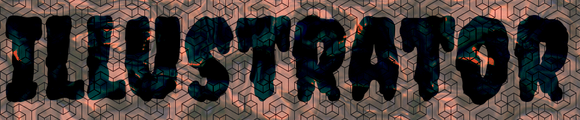

home pixels vector print animation
For my Vector Project, my character inspiration was my stuffed animal, Moo Cow. I really enjoyed this project because it really helped get practice using the pen tool.